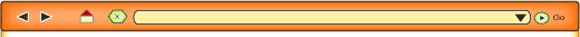

Condividere storie online
In this activity you will embark on creating an online Italian personal blog or website.
Oggigiorno tutti possiamo avere una presenza online. Un blog, una pagina web personale ci permettono di condividere esperienze, pensieri, punti di vista con un pubblico vastissimo che va oltre i confini del proprio mondo. È un modo per entrare in contatto con le storie degli altri, e per dire la propria!
Blog
Cos'è un blog
Un blog è un diario personale e pubblico. Personale, perché è tuo e lo gestisci come vuoi. Pubblico, perché tutti lo possono leggere. Un blog è il tuo sito web di facile utilizzo, dove puoi pubblicare al volo i tuoi pensieri.
Un blog è facile da gestire.
I commenti (detti post) inseriti nel blog, vengono ‘etichettati’ con la data e l'orario di inserimento e vengono visualizzati in ordine cronologico inverso (dal più recente al più remoto).
Chi ti legge può lasciare dei commenti a quello che hai scritto (a meno che tu cambi le impostazioni).
Aprire un proprio Blog non costa nulla.
Avendo a disposizione un PC ed un collegamento alla rete telefonica, potrai aggiornare o modificare il tuo blog da qualsiasi parte del mondo.
Sito consigliato www.pcdazero.it, Parole chiave: creare un blog
This site contains information on how to create a blog.
Quali aspetti del blog, come modo di comunicazione ti piacciono?
Adolescenti: cybernauti alla ricerca dell'identità is the title of an interesting thesis by Italian psychologist Walter Iacobelli. It deals with online communication and the search for identity of adolescents. The following section is of particular interest:
Capitolo 6 L'adolescente e l'identità virtuale:
6.2 Il sito personale: ‘Mondo esisto’.
To access this work, go to www.matrice.it, search under articoli for Adolescenti: cybernauti alla ricerca dell'identità by Walter Iacobelli, aprile 2005 (2001).
Per entrare in contatto con le storie degli altri, clicca
Partecipa a una discussione ed esprimi il tuo punto di vista sull'argomento.
- Cosa pensi della pagina web/del blog personale?
- Hai già creato una presenza online? Come trovi questa esperienza?
- Secondo te, quali sono i vantaggi, gli aspetti negativi and i rischi potenziali della comunicazione/presenza personale online?
To review useful phrases and expressions for discussion, refer to
Italia, ci sono!
Abbraccia le nuove tecnologie e crea la tua presenza online in Italia.
Condividi la tua storia personale! Fatti conoscere!
If you need help with content and text type for this activity, click on the following tab to read more.
Il sito personale
Un sito personale deve contenere qualcosa di autobiografico. Chi visita il sito può farsi un'idea dell'autore: aspetto fisico, background, passioni ed alcuni eventi clou della sua vita.
Per questo contesto è meglio non dare troppi dettagli. Bisogna identificare alcuni flash importanti della vita e catturarli in modo succinto. È bene includere anche una componente visiva che può esprimere molto più che solo parole.
What advice is given regarding how to set up and what to include in a blog or website?
- autobiographical account
- not too many details/capture important life events succinctly
- visual component
In the thesis Adolescenti: cybernauti alla ricerca dell'identità by Walter Iacobelli, aprile 2005 (2001), Appendice B: La pagina web personale di Carla provides a detailed, visual example of the various components of a personal web page.
To access this work, go to www.matrice.it.
Search under articoli for Adolescenti: cybernauti alla ricerca dell'identità by Walter Iacobelli, 2005 (2001). Go to Appendice B: La pagina web personale di Carla.
Presenza personale online
Write a brief autobiographical account for your personal online Italian blog or website.
Include i flash importanti del tuo percorso fin adesso.
Suggested content:
Il motivo per il tuo blog
Presentazione/spiegazione di te
Flash importanti della tua vita:
- l'infanzia
- l'adolescenza
- la scuola.
Include visual material to help create your image.
Write in a way so as to engage and interest the reader.
Experiment with new language. Look at Italian online blogs for inspiration. You may even find some famous personalities! Identify words and phrases in them that you can use or modify in your own writing.
Alternative
Write about i flash della tua vita that capture significant events in your life.
Select an appropriate presentation for purpose and audience. For example:
Presentation
- photo album with captions
- video with commentary
- scrap book.
Purpose/audience
- memento to commemorate end of school life for personal memories
- keepsake of seventeenth birthday (or other significant birthday) for personal memories.